<!-- Navbar branding (included on every page via include-before-body in _quarto.yml):
     1. replaces the plain site title with the stacked program name
     2. adds the white UMass Amherst wordmark, linking to umass.edu (UMass brand rule), at the right of the navbar -->
<script>
  (function () {
    var title = document.querySelector(".navbar .navbar-title");
    if (title) {
      title.innerHTML =
        '<span class="pn-top">UMass Amherst</span>' +
        '<span class="pn-name">Biostatistics</span>' +
        '<span class="pn-sub">Master of Science</span>';
      title.classList.add("program-name");
    }
    var nav = document.querySelector(".navbar .navbar-container");
    if (nav) {
      var a = document.createElement("a");
      a.className = "umass-nav-logo";
      a.href = "https://www.umass.edu";
      a.setAttribute("aria-label", "University of Massachusetts Amherst");
      a.innerHTML =
        '' +
        '';
      nav.appendChild(a);
    }
  })();
</script>
